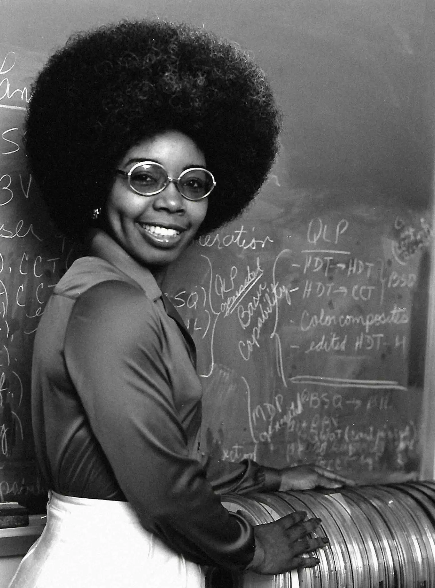
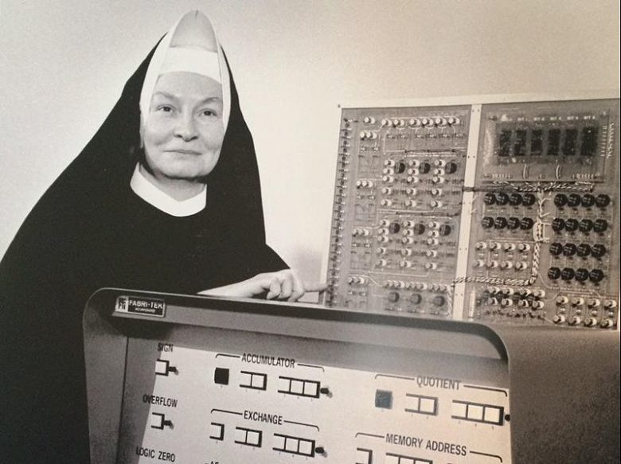

Hedy Lammar
Hedy Lamarr foi uma grande atriz, construiu uma carreira magnífica em Hollywood, no entanto quando ela entrou em um relacionamento com Hughe, se inspirou pela inovação dele. E em 1940, quando teve uma troca de conhecimentos com George Antheil, eles conseguiram criar um sistema de comunicaão, para guiar torpedos até os alvos, durante a segunda guerra mundial.
O sistem tinha o uso de salto de frequência entre ondas de rádio, com o transmissoe e o receptor, saltando para novas frequências juntos. Isso impediu que interrompessem as ondas de rádio e possibilitou que os torpedos encontrassem os alvos

As Meninas do ENIAC
Foram selecionadas 5 mulheres

Valerie Thomas
Marie Van Brittan Brown

Mary Kenneth Keller